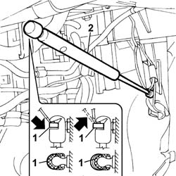
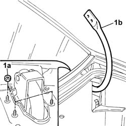

7025B22 Boot LID HINGES (one), left or right - R.R. with lid removed
- Path
- Procedures > 70 FITTINGS > 7025 COMPARTMENT LIDS > 7025B BOOT LID > 7025B22 Boot LID HINGES (one), left or right - R.R. with lid removed
- Kind
- repair procedure (removal / refitting; the operation number is the code)
- Applies to
- all engines; all production periods
- Interactive page
- https://sloeber94.github.io/elrnDB-lThss/en/#/80235
Applies to: all engines; all production periods
 Removing
Removing
 Refitting
RefittingSee in Op. 7050A20 Single rear seat cushion - R.R.
-
See in Op. 7050A19 REAR SEAT BACKREST - R.R.
-
See in Op. 7040H46 Left or right rear pillar upper trim (one) - R.R.
-
See in Op. 7040B21 Luggage compartment upper TRIM - R.R.
-
1. Using a screwdriver release the hinge side retaining spring (without removing it).
See in Op. 7040H80 REAR PARCEL SHELF - R.R.
2. Detach the telescopic strut, boot lid hinge side.

Applies to: all engines; all production periods
1. Undo the fixing nuts (1a), on the rear parcel shelf crossmember, and remove the boot lid hinges (1b).

Applies to: all engines; all production periods
Refitting
Removing- Place the boot lid hinges in position and tighten the nuts fixing them to the rear parcel shelf crossmember.
- Fit the end in the housing in the boot lid hinges and secure it using the retaining spring.
See in Op. 7040H80 REAR PARCEL SHELF - R.R.
-
See in Op. 7040B21 Luggage compartment upper TRIM - R.R.
-
See in Op. 7040H46 Left or right rear pillar upper trim (one) - R.R.
-
See in Op. 7050A19 REAR SEAT BACKREST - R.R.
-
See in Op. 7050A20 Single rear seat cushion - R.R.
-